Modulo 3 — Laboratorio degli strumenti
Esercitazioni pratiche guidate: setup degli account, primi prompt, costruzione di artefatti didattici con Gemini, ChatGPT, NotebookLM, Storybook, Padlet, GEM personalizzate.
Obiettivi del modulo¶
- Configurare gli account e i workspace necessari
- Costruire prompt efficaci per generare materiali didattici
- Creare una GEM personalizzata con base documentale via NotebookLM
- Generare immagini, infografiche e contenuti interattivi
- Realizzare un prototipo di attività didattica con vibe coding
Ascoltare · Podcast¶
Podcast generato come «Audio Overview». Ideale per fruizione in mobilità.
Guardare · Slide¶
Presentazione del modulo. Usa le frecce per scorrere, clicca sull'immagine per ingrandire.
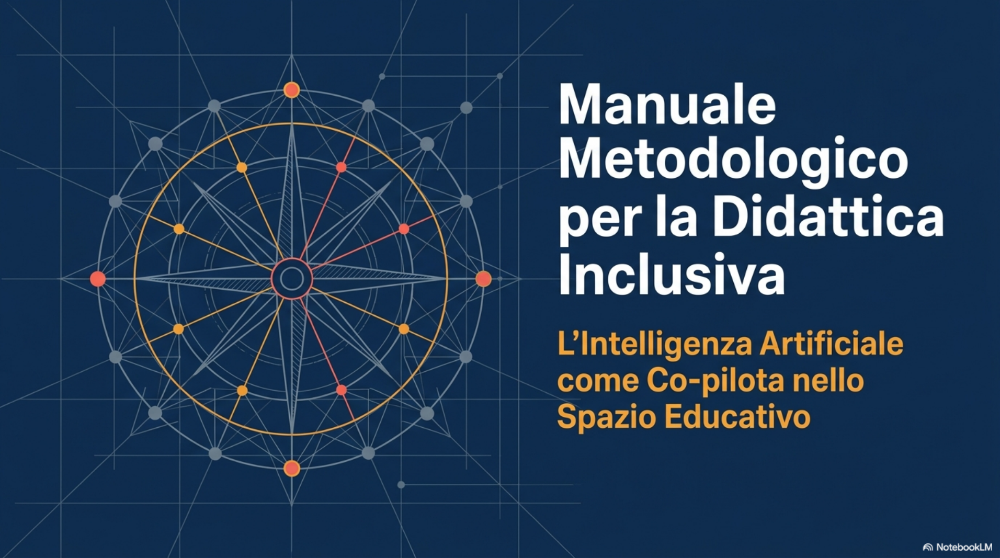
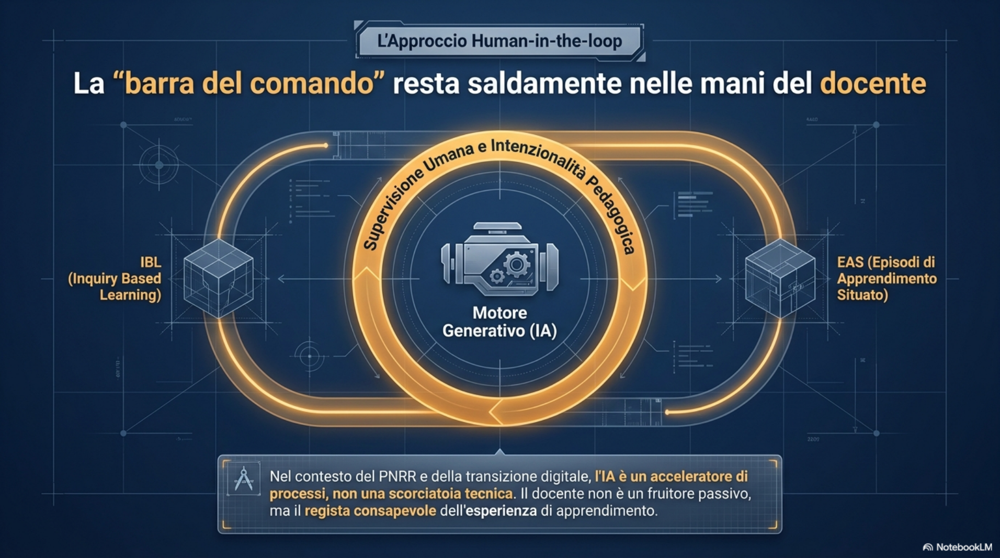
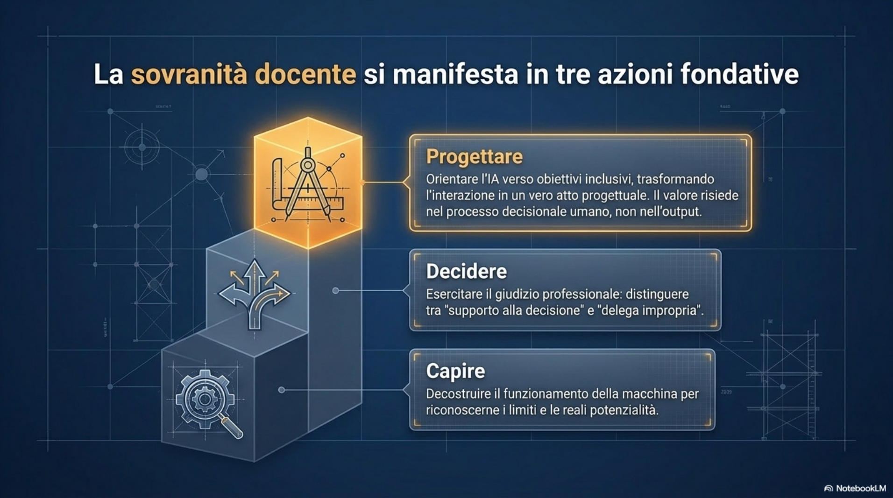
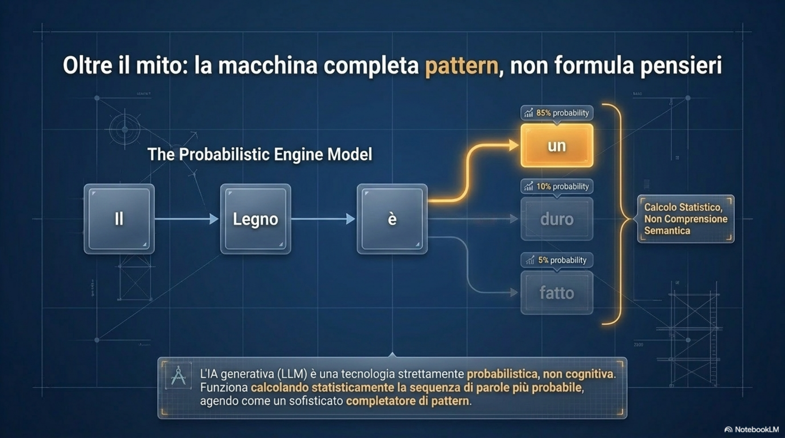
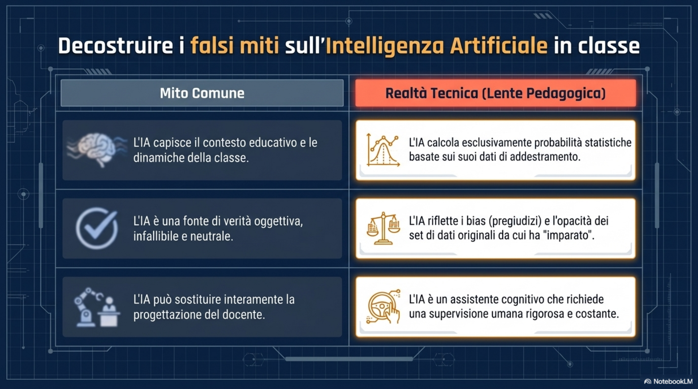

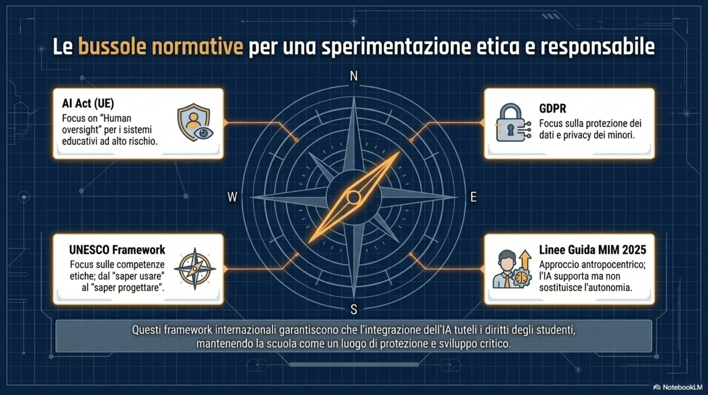
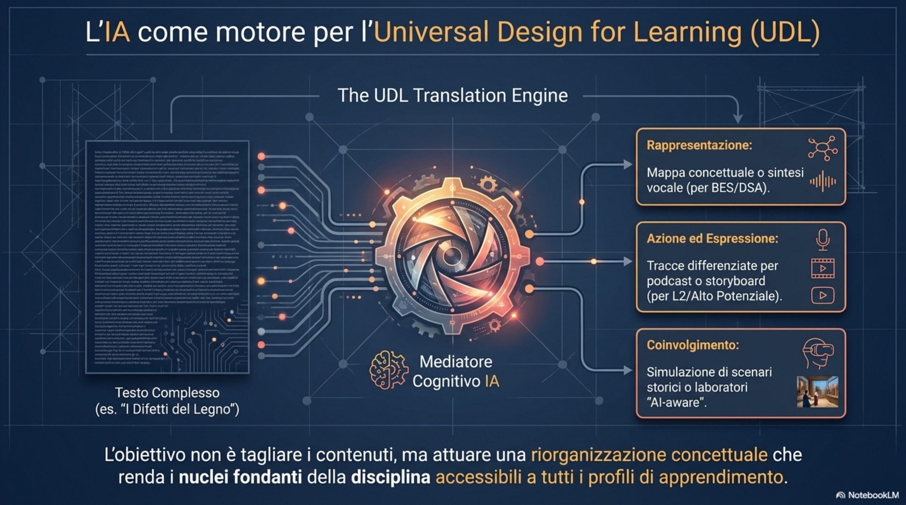
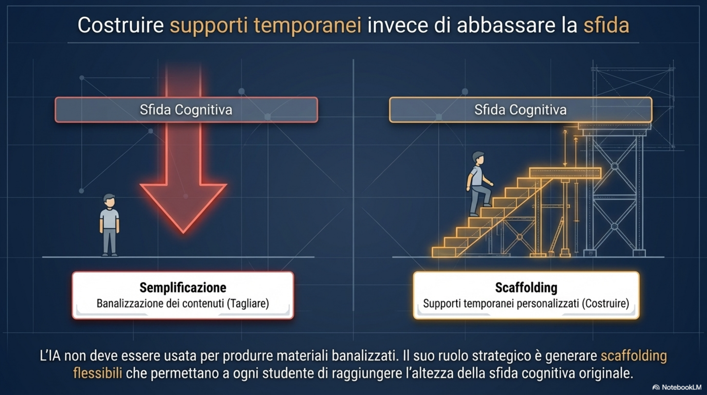

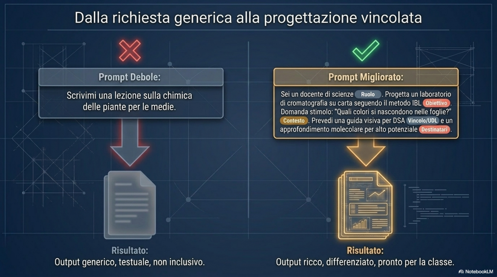

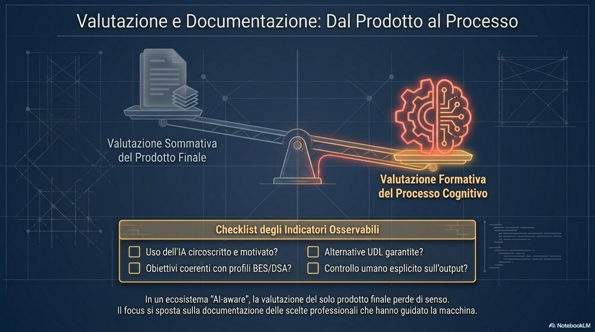
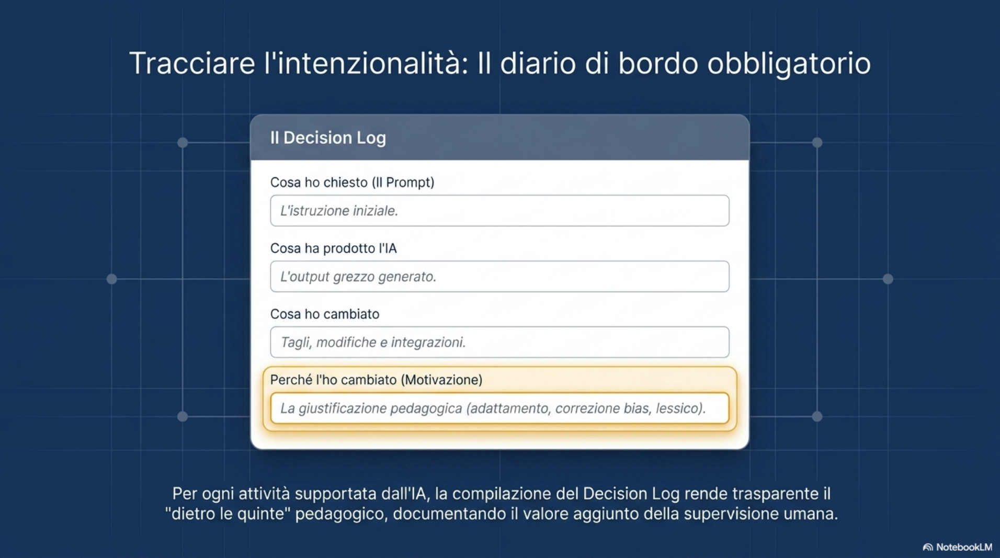
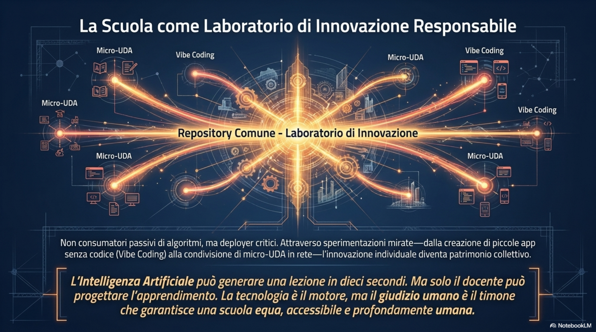
Vedere · Video tutorial¶
Video tutorial di approfondimento. Guardali in ordine o salta a quello che ti interessa.
Leggere · Dispensa¶
Corso di formazione
IA come co-pilota nella progettazione della didattica inclusiva
Dispensa operativa del Laboratorio 1
Gruppo 2 - Sede di Rosarno
Data dell'incontro: 24 aprile 2026
Durata: circa 2 ore e 45 minuti
Formatore: Antonio Scaramuzzino
Destinatari: docenti di scuola dell'infanzia, primaria e secondaria di I grado
Indice¶
1. Obiettivi del laboratorio
2. Prerequisiti e setup
3. Attivita guidate
3.1 Mappatura dei bisogni didattici sul Padlet
3.2 Generazione di immagini e infografiche didattiche
3.3 Confronto fra modelli: ChatGPT e Gemini (Nano Banana)
3.4 Immagini da colorare e illustrazione di favole
3.5 Storybook: libri illustrati con Gemini
3.6 Costruzione di una Gem personalizzata
3.7 Collegamento di NotebookLM a una Gem
3.8 Verifica e didattica dell'errore: poesie e rime
3.9 Vibe coding: app interattive con Canvas di Gemini
4. Esempi e prompt costruiti durante il laboratorio
5. Domande dal gruppo
6. Sintesi e prossimi passi
7. Riepilogo strumenti utilizzati
1. Obiettivi del laboratorio¶
Il primo incontro di laboratorio del Gruppo 2 ha avuto un taglio fortemente operativo: l'obiettivo era trasferire ai partecipanti la pratica di scrittura dei prompt, l'uso consapevole degli strumenti di intelligenza artificiale generativa e l'esplorazione di alcuni casi d'uso concreti per la progettazione didattica inclusiva. L'incontro si e svolto in presenza, con la possibilita di seguire in parallelo le proiezioni tramite Google Meet e la Classroom del corso.
Al termine del laboratorio i partecipanti sono in grado di:
- scrivere prompt strutturati e ricchi di vincoli per generare immagini, infografiche e testi;
- distinguere il comportamento di ChatGPT e Gemini (con il motore Nano Banana) sulla generazione visiva;
- creare immagini da colorare e illustrazioni in stile coerente per attivita di classe;
- produrre libri illustrati con lo strumento Storybook di Gemini;
- costruire una Gem personalizzata che incapsula istruzioni riutilizzabili;
- collegare una Gem a un notebook di NotebookLM per ancorare le risposte a fonti proprie;
- riconoscere errori, bias e allucinazioni e impostare attivita didattiche su questa consapevolezza;
- sperimentare il vibe coding tramite Canvas di Gemini per generare piccole app educative.
2. Prerequisiti e setup¶
Strumenti necessari:
- browser aggiornato (Chrome consigliato);
- account Google personale oppure account istituzionale della scuola;
- accesso alla Google Classroom del corso e al Padlet collegato;
- connessione a Internet stabile (in alternativa, hotspot 5G dal proprio smartphone).
|
Note pratiche - Workspace e account I workspace Google delle diverse scuole non sempre comunicano fra loro: una risorsa creata in un dominio puo non essere apribile da un account di un altro dominio. Lo stesso vale fra account istituzionali e account Gmail personali. Suggerimento: salvare il link del Padlet del corso fra i preferiti e tenere a portata di mano sia l'account scolastico sia quello personale, scegliendo di volta in volta quello compatibile con la risorsa che si vuole aprire. |
Strumenti che vengono utilizzati durante il laboratorio:
- ChatGPT (OpenAI) - generazione di testo, immagini e infografiche dense di testo;
- Gemini (Google) - chat, motore di immagini Nano Banana, modalita Canvas, Gem e Storybook;
- NotebookLM (Google) - raccolta di fonti e ancoraggio documentale;
- Padlet - bacheca collaborativa di raccolta bisogni didattici e prompt;
- Google Classroom - punto di accesso ai materiali del corso.
|
Errori comuni - Avvio della sessione Sintomo: la Classroom non apre il link condiviso. Causa: workspace di dominio diverso. Soluzione: aprire la risorsa con l'account compatibile o usare il link alternativo distribuito nella bacheca. Sintomo: la Wi-Fi della sede non e sufficiente per 10 dispositivi. Soluzione: attivare l'hotspot 5G dal proprio smartphone e collegare il portatile. |
3. Attivita guidate¶
3.1 Mappatura dei bisogni didattici sul Padlet¶
Scopo
Raccogliere in modo strutturato situazioni reali di classe in cui l'intelligenza artificiale puo offrire un supporto concreto alla didattica inclusiva. La mappatura diventa la base sui cui costruire i casi d'uso del corso.
Passi operativi
1. Aprire la Google Classroom del corso e individuare il post con il link al Padlet della terza lezione.
2. Cliccare sul pulsante con il segno piu per aggiungere un nuovo post.
3. Nello spazio Scrivi qualcosa, descrivere brevemente un bisogno didattico reale, riferito a una classe propria.
4. Indicare l'ordine di scuola e il tipo di problema (lettura, comprensione, attenzione, produzione orale o scritta, motivazione, lingua italiana L2, semplificazione di concetti).
5. Pubblicare il post e leggere quelli dei colleghi, lasciando un voto pollice in su sui post in cui ci si riconosce.
Risultato atteso
Una bacheca condivisa con scenari di didattica reale, suddivisi per ordine di scuola e per tipologia di bisogno. Questa bacheca viene poi richiamata nelle attivita successive per scegliere su quali casi sperimentare i prompt.
Esempi raccolti durante il laboratorio
- Alunno DSA con grave disturbo dell'attenzione: coinvolgerlo senza farlo sentire diverso.
- Concetto di decina alla scuola primaria, da rendere semplice e accattivante.
- Studente di secondaria di primo grado arrivato da poco in Italia, con difficolta nella lettura, nella comprensione del testo e nella produzione orale.
- Alunno di scuola primaria che fatica a comprendere semplici situazioni problematiche, anche quando sono supportate da immagini.
- Sezione di scuola dell'infanzia con un bambino iperattivo e provocatorio.
- Insegnante di strumento musicale: necessita di automatizzare almeno una prima stesura della trascrizione musicale per un determinato organico strumentale, attivita che oggi richiede quasi un mese di lavoro per brano.
|
Note pratiche - Qualita dei post Per essere utile il post deve descrivere un problema reale e contestualizzato, non una richiesta generica. Indicare l'ordine di scuola, la disciplina, il tipo di alunno e cosa si vorrebbe ottenere dall'IA aiuta a costruire prompt mirati nelle fasi successive del corso. |
3.2 Generazione di immagini e infografiche didattiche¶
Scopo
Imparare a generare immagini didattiche di qualita - poster tecnici, schede, infografiche - controllando in modo esplicito stile, contenuto informativo e vincoli grafici tramite il prompt.
Concetto chiave: il prompt come progetto
Gli LLM generano testo e immagini come sequenze di unita predittive: il risultato dipende dalla statistica del contesto fornito. Piu il prompt e specifico nei termini tecnici, nei vincoli visivi e nelle esclusioni, piu il risultato si avvicina all'intento. Scrivere un prompt e quindi un atto progettuale: si dichiarano il soggetto, lo stile, la composizione, i vincoli e cio che non deve comparire.
Passi operativi
1. Aprire ChatGPT (o il modello di generazione immagini scelto) e avviare una nuova chat.
2. Definire il soggetto principale in modo univoco (per esempio, una moka, un treno Maglev, un animale in via di estinzione).
3. Specificare lo stile visivo: disegno tecnico lineare, poster da museo, infografica densa, illustrazione fotorealistica.
4. Aggiungere i vincoli compositivi: viste ortografiche, linee di costruzione, tacche di misura, callout annotati, sfondo a tinta unita.
5. Dichiarare le esclusioni: niente ombreggiature, niente 3D, nessun oggetto extra, nessun testo decorativo.
6. Chiedere al sistema di cercare online un riferimento se serve realismo, oppure passare direttamente un'immagine di riferimento.
7. Generare l'immagine e iterare: chiedere modifiche puntuali (cambio di stile, aggiunta o rimozione di elementi, traduzione del testo).
Esempio: poster tecnico di una moka
Prompt utilizzato (sintesi): crea un poster tecnico a soggetto singolo della moka, usando solo il soggetto principale; trova un riferimento online; rendilo come un nitido disegno tecnico lineare bianco su sfondo blu cobalto intenso con griglia leggera; usa linee schematiche 2D piatte, contorni ortografici, linee di costruzione, tacche di misura; includi viste alternative; mantieni un layout semplice ed equilibrato; niente ombreggiature, niente 3D, niente illuminazione, nessun oggetto extra.
Esempio: infografica densa su un animale in via di estinzione
Prompt utilizzato (sintesi): crea un'infografica ricca su un animale in via di estinzione; scegli tu l'animale a partire da una ricerca online su habitat, dieta e tratti distintivi; presenta le informazioni con elementi visivi annotati e callout strutturati, non con sezioni generiche; impostala come illustrazione grafica di impatto con un animale centrale fotorealistico come punto focale, supportato da diagrammi annotati; rendila densa, materica e dall'aspetto professionale.
L'output ottenuto durante il laboratorio e stata un'infografica sulla vaquita (focena del Golfo di California), con callout su habitat, pinna dorsale, ciclo vitale, struttura sociale e morfologia.
Risultato atteso
Un poster o un'infografica pronta all'uso in classe, coerente con la richiesta didattica e con il livello scolastico. La stessa struttura di prompt puo essere riutilizzata cambiando il soggetto (per esempio, da vaquita a leone africano).
|
Note pratiche - Iterazione e libreria di prompt Una volta trovato un prompt che funziona, conviene tenerlo in una libreria personale (documento, nota o Gem dedicata). Per generare la stessa infografica su un soggetto diverso basta cambiare il nome del soggetto in coda al prompt: la struttura grafica rimane stabile. La parola densita nel prompt cambia in modo netto la quantita di informazioni presenti nell'infografica: vale la pena variarla per ottenere versioni piu o meno ricche. |
|
Errori comuni - Generazione di immagini Prompt troppo generico: si ottiene un'immagine decorativa ma poco utile in classe. Mancanza di esclusioni: il sistema aggiunge elementi non richiesti (oggetti, ombre, testi decorativi). Soluzione: aggiungere esplicitamente niente 3D, niente ombreggiature, nessun oggetto extra. Logo o marchi: alcuni sistemi bloccano la generazione per motivi di copyright; occorre riformulare il soggetto in termini generici (per esempio caffettiera ottagonale invece del nome commerciale). |
3.3 Confronto fra modelli: ChatGPT e Gemini (Nano Banana)¶
Scopo
Confrontare il comportamento di due famiglie di modelli sulla stessa richiesta per scegliere consapevolmente quale utilizzare in base al compito didattico.
Procedura del confronto
1. Definire un prompt comune (per esempio: infografica didattica sul leone africano con callout annotati).
2. Eseguirlo in ChatGPT e annotare il risultato.
3. Aprire Gemini, selezionare lo strumento Crea immagine e incollare lo stesso prompt.
4. Confrontare leggibilita del testo all'interno dell'immagine, presenza di errori ortografici, qualita grafica, fedelta al soggetto.
Osservazioni emerse durante il laboratorio
- ChatGPT (versione corrente) restituisce infografiche dense, con testo nei callout sostanzialmente leggibile e privo di errori macroscopici.
- Gemini con il motore Nano Banana produce immagini gradevoli e veloci, ma il testo all'interno dei riquadri risulta sfocato e spesso contiene errori ortografici nelle stringhe lunghe.
- Per immagini di soggetto puro o con poco testo, entrambi i sistemi sono adeguati; per infografiche fittamente testuali, ChatGPT e oggi piu affidabile.
- Gemini ragiona prima di generare: puo aggiungere precisazioni (per esempio, segnalando che una specie e classificata come vulnerabile e non in via di estinzione).
|
Note pratiche - Quale modello scegliere Regola operativa: se l'immagine deve veicolare molto testo (infografiche dense, poster con etichette), usare ChatGPT; se serve un'illustrazione, una scena o un'immagine da colorare, Gemini con Nano Banana e molto rapido e versatile. |
3.4 Immagini da colorare e illustrazione di favole¶
Scopo
Produrre schede da colorare personalizzate, coerenti con il contenuto in corso, e illustrare in piu scene una favola o un racconto da utilizzare nella scuola dell'infanzia o nei primi anni della primaria.
Passi operativi
1. Aprire Gemini (anche in modalita anonima se non si dispone di account istituzionale aperto verso l'esterno).
2. Avviare una nuova chat e impostare il contesto: si chiede una serie di immagini da colorare a partire da una favola.
3. Passare il testo della favola direttamente nella chat (per esempio, La volpe e l'uva di Esopo).
4. Chiedere quattro immagini in bianco e nero che raccontano scene diverse della favola, mantenendo lo stile coerente per essere colorate dai bambini.
5. Salvare le immagini generate e, se necessario, chiedere modifiche (cambio di personaggi, ambientazione, tratto piu o meno marcato).
Esempio sviluppato durante il laboratorio
La favola La volpe e l'uva e stata copiata dal sito di riferimento e incollata in Gemini con la richiesta di quattro immagini di scene diverse da colorare. Il modello ha mantenuto il contesto della chat (immagini da colorare) e ha prodotto una sequenza coerente in bianco e nero.
|
Note pratiche - Mantenere il contesto della chat Quando una chat parte con una richiesta tipo voglio immagini da colorare, le richieste successive ereditano automaticamente lo stile, anche se non viene ripetuto. Per cambiare stile bisogna dirlo esplicitamente. |
3.5 Storybook: libri illustrati con Gemini¶
Scopo
Generare un libro illustrato di circa 10 pagine, con testo a sinistra e immagine a destra, completo di funzionalita di ascolto, da proiettare in classe o usare come supporto per attivita di lettura e narrazione.
Passi operativi
1. Accedere a gemini.google.com con l'account compatibile.
2. Dal menu laterale, espandere la voce Gem e selezionare l'esperimento Storybook.
3. Nello spazio della chat, scrivere la storia da illustrare oppure incollare un testo gia pronto (per esempio la favola della volpe e l'uva).
4. Attendere la generazione del libro: il sistema produce automaticamente 10 pagine illustrate.
5. Riprodurre la lettura automatica tramite il comando Ascolta integrato nel libro (text to speech).
6. Iterare con istruzioni in linguaggio naturale: cambiare il nome dei personaggi, sostituire un animale, adeguare il lessico all'eta dei bambini.
Esempio sviluppato durante il laboratorio
Partendo dalla favola della volpe e l'uva, lo Storybook ha romanzato il testo e introdotto un personaggio secondario chiamato corvo. Successivamente, chiedendo non chiamarla Fulvo, chiamala col suo nome e il corvo e un pettirosso, il sistema ha rigenerato testo e illustrazioni in modo coerente, mantenendo la struttura del libro.
Un secondo esempio mostrato durante l'incontro era uno Storybook intitolato Alina e le amiche della Terra, sviluppato con la tecnica claymation (animazione in plastilina) per raccontare in modo rassicurante la storia di alcuni insetti utili e affrontare la paura dei bambini per le api.
|
Note pratiche - Lessico e destinatari Storybook tende a usare un lessico ricercato. Per la scuola dell'infanzia conviene chiedere esplicitamente di adeguare il linguaggio: per esempio, scrivi con frasi brevi, parole semplici, adatte a bambini di 4-5 anni. Per personalizzare i personaggi e possibile caricare un'immagine di riferimento (per esempio, l'illustrazione di un libro): il modello cerca di mantenere quei connotati nelle pagine successive. |
3.6 Costruzione di una Gem personalizzata¶
Scopo
Incapsulare un prompt complesso in una Gem dedicata, in modo da richiamarlo ogni volta senza doverlo riscrivere o cercare nelle vecchie chat. Una Gem si comporta come una funzione: riceve un input minimo (per esempio, il nome del soggetto) e restituisce un output coerente con le istruzioni interne.
Passi operativi
1. Da gemini.google.com aprire il menu laterale e cliccare su Gem, poi su Nuovo Gem.
2. Inserire un nome descrittivo (per esempio Immagine 3D).
3. Nel campo Istruzioni, incollare il prompt riutilizzabile (in italiano o in inglese).
4. Negli Strumenti, attivare Creazione di immagini se la Gem deve produrre immagini.
5. Facoltativo: utilizzare il pulsante con l'icona della matita per chiedere a Gemini stesso di riscrivere e arricchire le istruzioni in forma piu dettagliata.
6. Salvare la Gem; da quel momento e richiamabile dal menu Gem.
7. Testare la Gem fornendo un input minimo (per esempio bicicletta, lampada da tavolo, treno Maglev) e verificare la coerenza dell'output.
Esempio sviluppato durante il laboratorio
E stata creata una Gem chiamata Immagine 3D contenente un prompt in stile museum exhibit per produrre infografiche tecniche con vista isometrica a 45 gradi. Fornendo come input la parola bicicletta, la Gem ha generato un'illustrazione 3D coerente; con la parola treno Maglev ha prodotto un poster tecnico isometrico con le caratteristiche del veicolo e il dettaglio della levitazione magnetica.
|
Note pratiche - Le Gem come funzioni didattiche Una Gem si puo pensare come una funzione informatica: si definisce una volta, si richiama all'infinito. E utile creare Gem tematiche, per esempio Sintesi a livelli di difficolta crescenti, Mappa concettuale a partire da un testo, Immagine da colorare in stile coerente. |
3.7 Collegamento di NotebookLM a una Gem¶
Scopo
Ancorare le risposte di una Gem alle proprie fonti documentali (libri di testo, linee guida, materiali del corso) raccolte in un notebook di NotebookLM, in modo da ridurre le allucinazioni e mantenere coerenza disciplinare.
Prerequisito
Avere a disposizione un notebook di NotebookLM gia popolato di fonti pertinenti (per esempio, i libri di tecnologia, le linee guida ministeriali, i quadri europei delle competenze). Il piano gratuito consente fino a 50 fonti per notebook; il piano Pro consente di superare ampiamente questo limite.
Passi operativi
1. Dalla configurazione della Gem, scorrere fino alla sezione Conoscenza.
2. Aggiungere come fonte un notebook di NotebookLM gia esistente.
3. Selezionare il notebook desiderato dalla lista (per esempio, il notebook con i libri di tecnologia).
4. Salvare la Gem.
5. Richiamare la Gem e chiedere, ad esempio, crea un'immagine del Maglev: il sistema consultera il notebook prima di generare l'output.
|
Note pratiche - Quando collegare le fonti Il collegamento al notebook conviene soprattutto quando si vogliono mantenere stile, terminologia e riferimenti del proprio libro di testo. Per soggetti generici (un animale, una citta) il collegamento non e necessario. |
3.8 Verifica e didattica dell'errore: poesie e rime¶
Scopo
Sperimentare la capacita di ragionamento dei modelli linguistici e impostare un'attivita didattica in cui gli studenti diventano correttori di un testo generato dall'IA, allenando la capacita di analisi e di metalinguaggio.
Passi operativi
1. Chiedere al modello di costruire una poesia in piu strofe con uno schema metrico esplicito (per esempio, sei strofe a rima ABAB).
2. Verificare strofa per strofa che lo schema sia rispettato.
3. Far notare al modello eventuali deviazioni con una richiesta del tipo: Mi sembra che ci siano degli errori: riesci a riconoscerli? C'e una strofa con schema AABB anziche ABAB.
4. Osservare il processo di ragionamento del modello (le tracce di pensiero) e la riscrittura della strofa errata.
5. Trasporre l'attivita in classe: i ragazzi devono individuare l'errore prima dell'autocorrezione del modello.
Esempio sviluppato durante il laboratorio
Il modello ha prodotto una poesia in sei strofe; la sesta presentava uno schema AABB invece dell'ABAB richiesto. Dopo la segnalazione, il modello ha esplicitato il ragionamento (individuare lo schema problematico, sostituire la sesta strofa, verificare la coerenza) e ha rigenerato la strofa corretta. La trascrizione del ragionamento e stata utilizzata come materiale per riflettere con gli studenti su come si controlla la coerenza di un testo.
|
Note pratiche - Didattica della verifica Far cercare l'errore ai ragazzi prima di chiederlo al modello allena il senso critico. Anche le immagini possono contenere errori (testo nei callout, oggetti mal disegnati, anatomie improbabili): la caccia all'errore e un esercizio di alfabetizzazione critica all'IA. |
|
Errori comuni - Bias culturali Senza vincoli espliciti, i modelli tendono a riproporre stereotipi culturali e linguistici (per esempio, un medico raffigurato sempre come uomo, scritte in inglese al posto dell'italiano). Per ridurre i bias e necessario specificare nel prompt il contesto culturale, il genere, la varieta etnica e la lingua dei testi. |
3.9 Vibe coding: app interattive con Canvas di Gemini¶
Scopo
Generare piccole applicazioni web interattive a partire da una descrizione in linguaggio naturale, senza scrivere codice manualmente. La tecnica viene chiamata vibe coding: si comunica al modello lo scopo, il pubblico e l'interazione desiderata e si itera sui risultati.
Passi operativi
1. Aprire Gemini e selezionare lo strumento Canvas.
2. Descrivere l'idea dell'app in linguaggio naturale: scopo didattico, livello scolastico, tipo di interazione (clic, drag, input vocale), elementi visivi.
3. Lasciare che Gemini generi una prima versione funzionante dell'app, visibile nella sezione Canvas.
4. Provare l'app, individuare i comportamenti da correggere e chiedere modifiche in linguaggio naturale (ad esempio, aggiungi un pulsante di ascolto, inserisci il riconoscimento vocale).
5. Iterare fino a ottenere un risultato utilizzabile in classe.
Esempi sviluppati o mostrati durante il laboratorio
- Simulatore di leva di primo grado: replica delle simulazioni di Phet Colorado, con masse trascinabili e fulcro mobile, per visualizzare il momento delle forze.
- Quiz multilingue sulle capitali europee: cliccando su una capitale, l'app genera al volo un'immagine e un quiz tematico su quella citta.
- Canta ripeti: app per la scuola dell'infanzia che mostra il testo di una filastrocca (Stella stellina, Giro giro tondo), disegna la scena, legge il testo con text-to-speech e ascolta la ripetizione del bambino.
- Suoni duri: laboratorio sui suoni duri con immagini generate e funzione di ascolto.
- Simulatore di canto gregoriano: app sperimentale che permette di intonare un testo secondo i modi ecclesiastici, costruita iterando sulla descrizione fornita dal docente esperto.
- Generatore di mazzi tematici di carte sul cyberbullismo, basato sulle funzioni di Propp e sulla rilettura di Rodari, con immagini e carte personaggio generate dinamicamente.
|
Note pratiche - Iterazione e codice Le app generate sono prototipi: poche centinaia o migliaia di righe di codice JavaScript. Non sono pronte per la pubblicazione ma sono ottime per esperienze di classe, dimostrazioni e laboratori brevi. E sempre possibile chiedere al modello di esportare il codice o continuare a modificarlo via prompt. |
|
Errori comuni - Vibe coding Funzioni che usano il microfono possono non funzionare se l'audio e gia occupato da un altro software (per esempio, Google Meet). Chiudere le altre fonti audio prima di testare. Modelli che generano interazioni complesse possono produrre piccoli bug nei primi tentativi: e normale, basta chiedere correzioni puntuali. |
4. Esempi e prompt costruiti durante il laboratorio¶
I prompt che seguono sono stati elaborati o mostrati durante l'incontro. Possono essere riutilizzati cambiando il soggetto o lo stile in funzione del proprio scenario didattico.
Prompt 1 - Poster tecnico di un oggetto
Crea un poster tecnico a soggetto singolo della [oggetto], usando solo il soggetto principale. Inizia trovandone un riferimento online. Rendilo come un nitido disegno tecnico lineare bianco su sfondo blu cobalto intenso con una griglia leggera. Usa linee schematiche 2D piatte, contorni ortografici, linee di costruzione, tacche di misura. La composizione puo includere due o tre piccoli riquadri di studio con viste alternative. Mantieni un layout semplice ed equilibrato. Niente ombreggiature, niente 3D, niente illuminazione, nessun oggetto extra.
Prompt 2 - Infografica densa su un animale
Crea un'infografica ricca su un animale in via di estinzione. Inizia trovandone uno online: puoi fare ricerche su habitat, dieta e tratti distintivi. Presenta le informazioni con elementi visivi annotati e callout strutturati, non con sezioni generiche. Impostala come illustrazione grafica di impatto con un animale centrale dettagliato e fotorealistico come punto focale, supportato da diagrammi annotati e da un mix di fotorealismo ed elementi grafici (forme, icone, campiture di colore) in una composizione stratificata. Rendila densa, materica e dall'aspetto professionale.
Prompt 3 - Infografica stile handwriting
Crea un'infografica con uno stile handwriting (scritto a mano) su [argomento]. Posiziona al centro il titolo principale; intorno, distribuisci callout annotati. Mantieni i testi in italiano anche se le istruzioni di stile sono in inglese.
Prompt 4 - Immagine 3D isometrica
Create a museum exhibit style technical infographic in fotorealistic 3D, isometric view at 45 degrees, of [oggetto]. Mantieni stile pulito, sfondo neutro, annotazioni in italiano.
Prompt 5 - Sequenza illustrata di una favola
A partire dal seguente testo [incollare la favola], crea quattro immagini di scene diverse da colorare. Mantieni uno stile coerente fra le quattro, in bianco e nero, con tratto semplice adatto a bambini della scuola dell'infanzia.
Prompt 6 - Poesia con schema metrico
Costruisci una poesia di sei strofe in rima ABAB. Tema libero. Rispetta lo schema in ogni strofa; al termine, indica esplicitamente la sequenza delle rime per ogni strofa.
Prompt 7 - Istruzioni per una Gem Immagine 3D
Sei un assistente specializzato nella creazione di immagini 3D didattiche. All'avvio, saluta l'utente e chiedi quale oggetto vuole rappresentare. Per ogni richiesta, genera un'immagine 3D isometrica a 45 gradi, stile museum exhibit, con annotazioni in italiano e sfondo neutro. Quando possibile, consulta il notebook collegato per recuperare descrizioni tecniche coerenti con i libri di testo.
5. Domande dal gruppo¶
Le domande emerse durante il laboratorio sono riportate qui in forma anonimizzata, raggruppate per tema.
5.1 Si puo gia usare l'IA con gli studenti?
La risposta e prudente: in attesa dell'approvazione del regolamento di istituto e di una mappatura dei casi d'uso, l'IA va utilizzata prevalentemente dal docente per progettare, semplificare e produrre materiali. Per gli alunni, l'uso e consentito in modo guidato, breve e tracciabile, senza creazione di account personali, soprattutto nella scuola dell'infanzia e primaria. La mappatura in preparazione presso l'istituto distinguera dove, come e con quali finalita l'IA puo essere impiegata, ordine di scuola per ordine di scuola.
5.2 Copyright nelle immagini e nei testi generati
I sistemi di generazione visiva possono attingere a immagini online per produrre i propri output; alcune piattaforme bloccano la generazione quando rilevano un rischio di violazione (per esempio, loghi commerciali). Per uso scolastico interno, non commerciale, valgono i medesimi principi dell'uso didattico di altri materiali. La buona prassi e dichiarare sempre il prompt e gli strumenti utilizzati: rende trasparente il processo e funge da citazione del lavoro svolto.
5.3 Le immagini con testi - perche escono sbagliate?
Storicamente i modelli di generazione visiva faticavano a riprodurre testo leggibile e privo di errori. La novita degli ultimi mesi e una significativa qualita del testo nelle immagini di ChatGPT; altri motori (per esempio Nano Banana di Gemini) sono migliorati ma producono ancora errori in stringhe lunghe. Per le infografiche fittamente testuali conviene oggi ChatGPT; per le immagini di soggetto puro, va bene anche Gemini.
5.4 Le trascrizioni musicali si possono automatizzare?
Esistono applicazioni che automatizzano la prima stesura di una trascrizione musicale, comprese le note. Alcune sono a pagamento. L'IA generativa puo supportare la fase di arrangiamento e di semplificazione, ma una trascrizione completa per un organico strumentale richiede ancora la supervisione del docente. Il tema sara approfondito nei prossimi incontri.
5.5 Si puo usare l'IA nel percorso di presentazione dell'esame?
Gli elaborati digitali sono ormai prassi nella scuola secondaria di primo grado. L'utilizzo dell'IA puo essere introdotto se dichiarato esplicitamente (prompt riportato, strumenti utilizzati indicati) e se l'apporto dello studente rimane evidente: ricerca, selezione delle fonti, verifica dei contenuti e rielaborazione critica.
5.6 Come si imposta un disegno tecnico in assonometria?
Una volta appresa la struttura del prompt per il poster tecnico, e sufficiente adeguare i descrittori di stile: chiedere una vista in assonometria a 30 gradi, specificare le proiezioni ortogonali da accostare e indicare il quadrante in cui posizionarle. La struttura del prompt resta la stessa, cambiano i descrittori tecnici.
6. Sintesi e prossimi passi¶
Il laboratorio ha messo a fuoco un cambio di paradigma: utilizzare l'IA in didattica non significa cercare il pulsante magico, ma scrivere prompt progettati, costruire piccoli strumenti riutilizzabili (Gem, notebook, app), validare gli output e portare in classe l'esercizio del controllo critico.
Punti chiave da ricordare
- Il prompt e un progetto: soggetto, stile, vincoli, esclusioni.
- Diversi modelli, diversi punti di forza: ChatGPT per testi densi nelle immagini, Gemini per illustrazioni rapide e flussi narrativi (Storybook, Canvas).
- Le Gem incapsulano prompt complessi e li rendono richiamabili in pochi secondi.
- NotebookLM permette di ancorare le risposte alle proprie fonti.
- L'errore e una risorsa didattica: caccia all'errore in immagini, infografiche, poesie, app generate.
- Il vibe coding apre la strada a piccoli strumenti su misura, anche per docenti non programmatori.
Prossimi passi proposti al gruppo
- Riprendere i bisogni didattici raccolti nel Padlet e costruire per ciascuno un prompt strutturato.
- Creare almeno una Gem personale (per esempio, una Gem Immagine da colorare o Mappa concettuale).
- Provare lo Storybook su una favola o un argomento disciplinare e annotare il prompt vincente.
- Confrontare gli stessi prompt fra ChatGPT e Gemini, annotando differenze utili nella didattica.
- Portare nel prossimo incontro un esempio concreto - immagine, infografica, app - generato in autonomia.
7. Riepilogo strumenti utilizzati¶
| Strumento | Funzione principale nel laboratorio |
|---|---|
| ChatGPT (OpenAI) | Generazione di testo, infografiche dense e immagini ad alta qualita testuale. Particolarmente efficace per poster tecnici e infografiche con callout. |
| Gemini (Google) | Chat generativa multimodale. Da gemini.google.com si accede a Crea immagine (motore Nano Banana), Canvas, Gem e Storybook. |
| Nano Banana | Motore di generazione immagini di Gemini, veloce per illustrazioni e scene. Ancora limitato sui testi lunghi nelle immagini. |
| Storybook (Gemini) | Esperimento Gem che produce libri illustrati di circa 10 pagine con text-to-speech integrato. |
| Gem (Gemini) | Funzionalita per incapsulare prompt riutilizzabili, configurando istruzioni, strumenti attivi e fonti di conoscenza. |
| NotebookLM | Notebook documentale che permette di raccogliere fonti (PDF, link, testi) e interrogarle in modo ancorato. Collegabile a una Gem. |
| Canvas (Gemini) | Modalita di Gemini per generare app web interattive (vibe coding) a partire da una descrizione testuale. |
| Padlet | Bacheca collaborativa utilizzata per raccogliere bisogni didattici, prompt e materiali di laboratorio. |
| Google Classroom | Punto di accesso ai materiali del corso e ai link delle risorse esterne. |
| Phet Colorado | Repository di simulazioni interattive di fisica e matematica, citato come riferimento per la creazione di app didattiche con il vibe coding. |
Questa dispensa raccoglie gli elementi operativi emersi durante il laboratorio del 24 aprile 2026 ed e pensata come manuale di lavoro autoportante: ogni attivita puo essere riprovata in autonomia seguendo i passi indicati e adattando i prompt al proprio contesto disciplinare e all'ordine di scuola.
Verificare · Quiz¶
Verifica la tua comprensione. Le risposte non vengono inviate a nessun server.
1Cos'è una GEM in Gemini?
Le GEM sono assistenti personalizzati: si configurano con istruzioni ('personà), eventualmente con documenti caricati come base di conoscenza.
2Per ottenere risposte ancorate a documenti specifici (es. una diagnosi anonimizzata), quale strumento è più adatto?
NotebookLM è progettato per la generazione 'ancoratà alle fonti: carichi documenti e l'IA risponde citando passaggi specifici.
3Cosa permette di fare lo Storybook (modalità di Gemini)?
Storybook genera libri illustrati: una sequenza di pagine con testo narrativo e immagini coerenti, utile per attività di scuola dell'infanzia e primaria.
4Padlet, integrato con l'IA, può essere usato in classe per…
Padlet è una bacheca collaborativa multimediale: con l'IA si possono generare contenuti che alimentano discussioni, mappe concettuali, gallerie di esempi prodotti dagli studenti.
5Quando carichi documenti in NotebookLM, una buona pratica è…
NotebookLM dà il meglio con un corpus mirato e di qualità. Caricare materiale irrilevante diluisce le risposte; dati sensibili (es. PDP, BES) vanno sempre anonimizzati prima del caricamento.
Ripassare · Flashcard¶
Clicca sulla carta per scoprire la definizione. Usa le frecce per scorrere.
Consultare · Glossario¶
- Gemini
- Famiglia di modelli LLM multimodali di Google (Gemini 2.5, Gemini Canvas). Disponibile su gemini.google.com.
- ChatGPT
- Chatbot di OpenAI basato su modelli GPT. Disponibile a chat.openai.com con versioni free e paid.
- NotebookLM
- Workspace di studio di Google: si caricano documenti (fino a 50), l'IA risponde ancorandosi alle fonti con citazioni puntuali.
- GEM personalizzata
- Gemini Personalized Assistant: assistente IA con persona, istruzioni e fonti dedicate (es. una GEM per la classe 3A).
- Gemini Canvas
- Modalità di Gemini per costruire artefatti interattivi (quiz, simulazioni, mini-app HTML) con dialogo iterativo.
- Storybook
- Modalità di Gemini per generare libri illustrati: una sequenza di pagine con testo narrativo e immagini coerenti.
- Padlet
- Bacheca digitale collaborativa per raccogliere contributi multimediali da una classe (testi, immagini, file, link).
- Workspace
- Ambiente di lavoro digitale condiviso (es. Google Workspace), spesso con account istituzionale (@scuola.edu.it).
- Prompt template
- Schema riusabile di prompt, con segnaposto da sostituire (es. [argomento], [classe]) per generare output dello stesso tipo.
- Prompt strutturato
- Prompt che include ruolo (chi sei?), contesto (per chi?), compito (cosa fare?), formato (come?), vincoli (cosa evitare).
- Lettura Immersiva
- Strumento Microsoft per l'accessibilità: TTS, sottolineatura, divisione in sillabe, dizionario per immagini, traduzione.
- TTS
- Text-to-Speech — tecnologia di sintesi vocale che legge ad alta voce un testo. Utile per dislessia e bisogni visivi.
- STT
- Speech-to-Text — trascrizione automatica del parlato. Permette agli studenti di dettare invece che scrivere.
- Nano Banana
- Generatore di immagini integrato in Gemini, capace di produrre o modificare immagini con prompt testuali.
- Whisper
- Modello open-source di OpenAI per la trascrizione vocale automatica multilingue.
- DALL-E
- Generatore di immagini di OpenAI, integrato in ChatGPT, basato su prompt testuali.
- MidJourney
- Generatore di immagini IA artistiche di alta qualità, attivo su Discord e via web.
- AraWord
- Strumento per creare testi con pittogrammi CAA (Comunicazione Aumentativa Alternativa), utile per autismo e disabilità intellettive.
- OCR
- Optical Character Recognition — riconoscimento del testo all'interno di immagini o scansioni di documenti.
- Mizou
- Piattaforma di chatbot supervisionati per attività didattiche con studenti, dedicata al mondo della scuola.
- MagicSchool
- Suite di oltre 80 strumenti IA pensati per docenti: generatori di test, rubriche, semplificatori, chatbot supervisionati.
- AI Studio
- Ambiente di sviluppo di Google per testare Gemini con parametri avanzati (temperatura, top-p) e integrare via API.